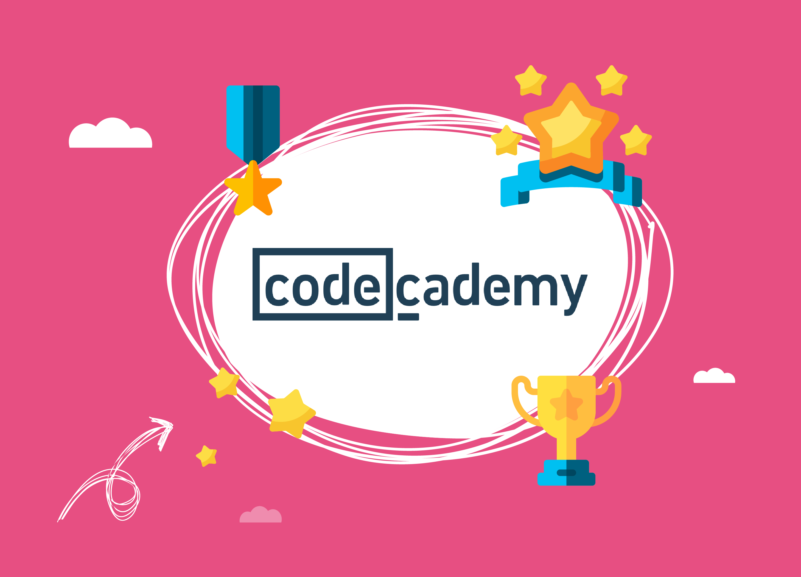
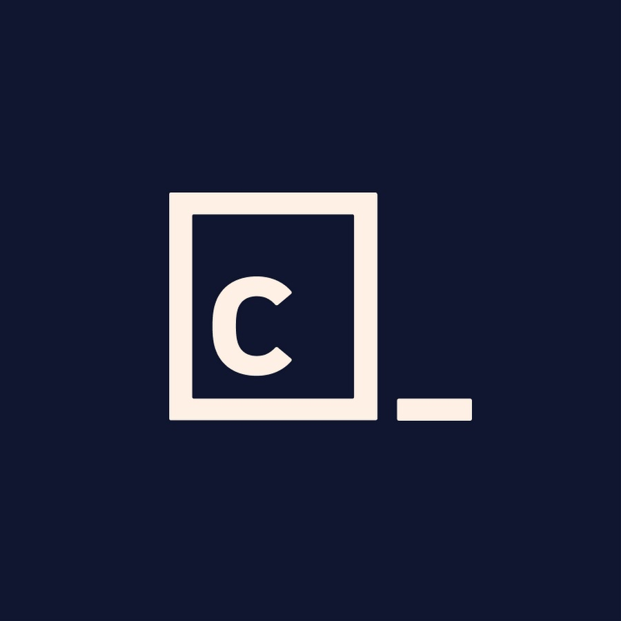

Uma plataforma voltada para o aprendizado de linguagens de programação e cursos gratuitos.
Página Principal
Multiplas Linguagens

Plataforma Gratuita

Programação prática
Uma plataforma voltada para o aprendizado de linguagens de programação e cursos gratuitos.
Página Principal
Multiplas Linguagens
Plataforma Gratuita
Programação prática
A Codecademy é uma plataforma de aprendizagem voltada principalmente para o ensino de programação, desenvolvimento web, ciência de dados e outras áreas relacionadas à tecnologia. Ela oferece cursos e conteúdos sobre diversas linguagens, como Python, JavaScript, Java, C++, C#, SQL, HTML e CSS, permitindo que o usuário escolha os assuntos de acordo com seus objetivos e nível de conhecimento.
A plataforma também organiza parte de seus conteúdos em cursos e trilhas de aprendizagem, que apresentam uma sequência de assuntos para ajudar o estudante a saber o que estudar e qual conteúdo seguir em cada etapa. Existem opções voltadas para iniciantes, além de conteúdos mais avançados e caminhos direcionados a áreas específicas da tecnologia.
Além das aulas, a Codecademy disponibiliza exercícios, questionários e projetos práticos, permitindo que o estudante revise os conceitos e aplique seus conhecimentos em diferentes atividades. Alguns recursos também utilizam inteligência artificial para oferecer auxílio durante o aprendizado, como explicações sobre erros e orientações para solucionar problemas.
A Codecademy pode ser uma opção interessante tanto para quem está começando a aprender programação quanto para quem deseja desenvolver conhecimentos específicos. Seu modelo combina explicações, prática e experimentação ao longo dos conteúdos.

O funcionamento da Codecademy é baseado na disponibilização de conteúdos educativos práticos relacionados à programação, ao desenvolvimento web e à ciência de dados. A plataforma reúne diferentes formatos de aprendizagem, como lições interativas, projetos práticos e caminhos guiados — incluindo trilhas focadas em habilidades específicas ou no desenvolvimento de carreiras completas —, permitindo que o usuário escolha os assuntos de acordo com seus interesses e avance pelos temas no seu próprio ritmo.
Durante o aprendizado, o usuário utiliza um editor de código integrado diretamente no navegador, o que permite escrever, testar e rodar códigos em tempo real de maneira simplificada. Os conteúdos procuram apresentar os conceitos de forma acessível e progressiva, cobrindo linguagens populares, como Python, JavaScript e HTML e CSS, além de temas modernos como inteligência artificial e computação em nuvem. Além disso, a plataforma disponibiliza um assistente virtual de inteligência artificial para explicar erros e ajudar na resolução de problemas diretamente no ambiente de estudos.
Além dos conteúdos técnicos, a Codecademy também apresenta recursos voltados para a preparação profissional e crescimento na carreira. Dessa maneira, a plataforma não se limita ao ensino básico de escrita de código, mas também busca apoiar o usuário na busca por oportunidades de trabalho, oferecendo ferramentas para simular entrevistas de emprego, verificar a prontidão profissional para vagas específicas e se preparar para certificações reconhecidas na indústria.
Por utilizar diferentes formatos de conteúdo, a Codecademy pode ser utilizada de maneira complementar ao desenvolvimento de novas habilidades. O usuário pode consultar recursos rápidos como guias de referência resumidos, artigos informativos ou desafios reais de programação, utilizando a plataforma como um suporte de apoio contínuo para construir um portfólio sólido e evoluir profissionalmente na área de tecnologia.

A Codecademy utiliza atividades interativas para ensinar programação, permitindo que o estudante escreva e execute códigos diretamente no navegador. Dessa forma, os conceitos apresentados nas aulas podem ser praticados imediatamente, tornando o aprendizado mais prático e participativo.
A plataforma organiza seus conteúdos em cursos e trilhas que orientam o estudante sobre o que aprender e em qual sequência. Existem opções para diferentes níveis de conhecimento e áreas, incluindo programação, desenvolvimento web, ciência de dados e inteligência artificial.
A Codecademy oferece projetos que permitem aplicar os conhecimentos aprendidos durante os cursos. O estudante pode utilizar conceitos de programação para desenvolver aplicações e outras atividades, aproximando o estudo de situações mais práticas e ajudando a desenvolver experiências que podem fazer parte de seu portfólio.
Durante o aprendizado, o estudante pode realizar exercícios, questionários e avaliações para verificar sua compreensão dos conteúdos. Esse tipo de atividade permite identificar quais conceitos já foram assimilados e quais ainda precisam de mais prática.
A plataforma também conta com recursos de assistência por inteligência artificial que podem ajudar o estudante a compreender erros, receber orientações e encontrar caminhos para resolver determinados problemas. Esse recurso pode funcionar como um apoio adicional durante as atividades práticas.
Além do aprendizado técnico, algumas trilhas da Codecademy são direcionadas à preparação profissional, reunindo conteúdos, projetos e atividades relacionados a diferentes carreiras na área de tecnologia. Dessa maneira, a plataforma pode ajudar o estudante a compreender como os conhecimentos adquiridos podem ser aplicados profissionalmente.

Para os estudantes, a Codecademy oferece um ambiente de estudos que permite desenvolver conhecimentos de tecnologia por meio de diferentes atividades e recursos. Além de acompanhar os conteúdos dos cursos, o usuário pode praticar o que aprendeu, realizar exercícios e desenvolver projetos que ajudam a transformar os conhecimentos teóricos em habilidades mais práticas.
Outro aspecto oferecido pela Codecademy é o acesso a recursos complementares de estudo, como artigos, guias de referência e desafios de programação. Esses materiais podem ser utilizados para revisar conceitos, consultar informações específicas ou continuar praticando mesmo depois da conclusão de uma determinada atividade. Assim, a plataforma pode servir não apenas como um curso, mas também como uma fonte de consulta durante o aprendizado.
Para usuários interessados em seguir uma carreira na área de tecnologia, a Codecademy também disponibiliza recursos voltados ao desenvolvimento profissional. Entre essas possibilidades estão atividades de preparação para entrevistas, ferramentas relacionadas à avaliação de habilidades e conteúdos direcionados a certificações. Esses recursos procuram aproximar o processo de aprendizagem das necessidades encontradas no mercado de trabalho.
Para professores e educadores, esses recursos podem ser utilizados como complemento às atividades de ensino, principalmente em propostas que envolvam prática e desenvolvimento de projetos. Dessa forma, a Codecademy pode contribuir para criar oportunidades de experimentação, permitindo que os estudantes tenham contato direto com a aplicação dos conhecimentos enquanto avançam em sua formação na área de tecnologia.